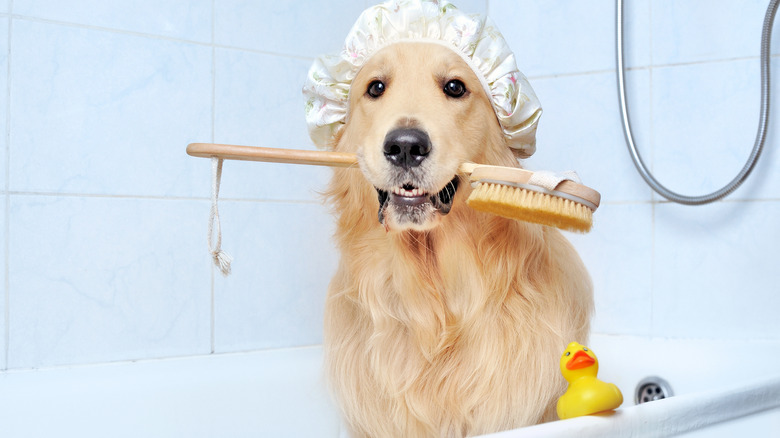
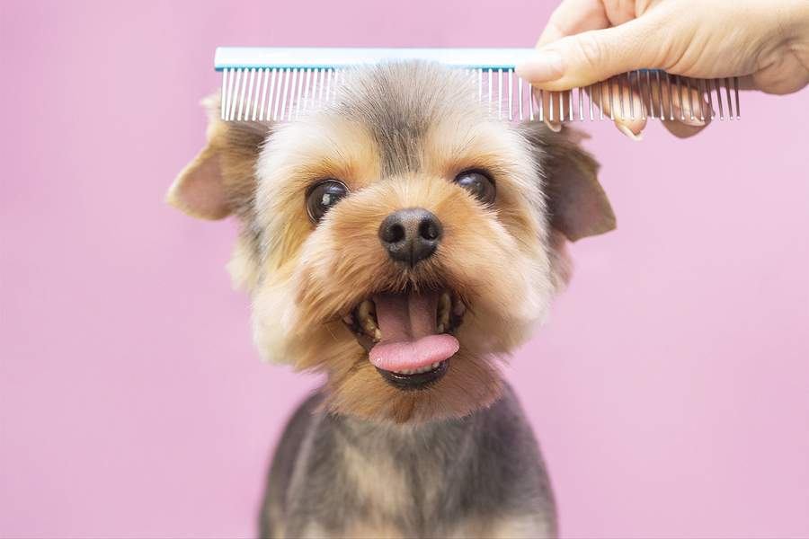

Welcome to Pet Health Blog
Your trusted source for pet health advice and resources
Why Pet Health Matters
As a pet owner, you want to provide the best possible care for your furry friends. Our blog is dedicated to providing you with expert advice and resources to help you keep your pets healthy and happy.

What You'll Find on Our Blog
- Expert advice on pet health and nutrition
- Personal stories and tips from pet owners
- Reviews of pet products and services
- News and updates on pet health research
Latest Blog Posts

Preventing Ticks: A Guide for Pet Owners
Ticks can be a common concern for pet owners, especially during warmer months when these pesky parasites are more active.

Essential Tips for Pet Grooming at Home
Pet grooming is an essential aspect of keeping your furry friend healthy and happy. While some pet owners choose to take their pets to a professional groomer, others prefer to do it themselves at home.

How to Properly Clean Your Pet's Ears
Ear cleaning is an essential part of your pet's grooming routine that often gets overlooked. Just like humans, pets need their ears cleaned regularly to prevent wax buildup and infections.
Follow Along
Stay up-to-date with the latest pet health tips, news, and resources by following us on social media.